A continuació, es detallen diverses comandes per gestionar usuaris en un sistema Linux.
Afegir un nou usuari
Per afegir un nou usuari amb el nom "david", utilitzem la següent comanda:
sudo adduser david
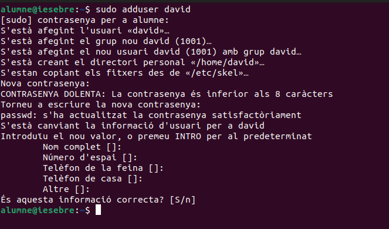
Ens demanarà la contrasenya i més informació sobre "David", com el nom complet i el telèfon, entre d'altres.
Inici de Sessió
Comprovem que l'usuari pot iniciar sessió correctament. Podem observar que "David" està creat i ens demana la contrasenya per accedir-hi.
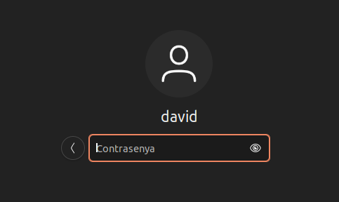
Confirmació d'Usuari
La comanda whoami ens confirma que l'usuari és "David" i que la seva carpeta d'usuari (home) està creada correctament.
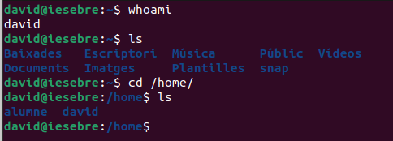
Eliminar un usuari sense eliminar la seva carpeta personal
Si volem eliminar un usuari anomenat "David" però mantenir la seva carpeta personal, podem utilitzar la comanda següent:
sudo deluser david
Nota: La carpeta
/home/davidno es perd.
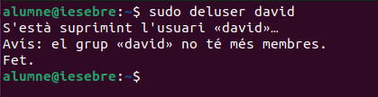
Comprovació de la Carpeta Personal
Comprovem si és veritat que la carpeta no s'ha esborrat per a l'usuari "David". Com es pot observar a la imatge, la carpeta existeix amb tots els documents. Això pot ser útil si un usuari abandona l'empresa però després torna, ja que seguirà tenint accés a la seva informació.
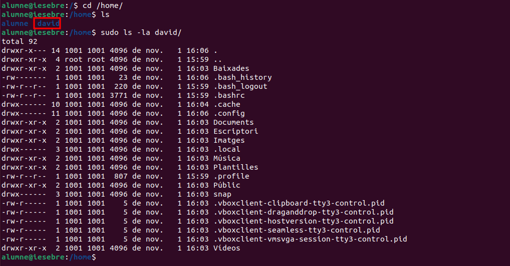
Eliminar un usuari i la seva carpeta personal
Per eliminar un usuari, incloent la seva carpeta personal i tots els seus fitxers, utilitzem:
sudo rm -rf /home/david
sudo userdel -r miquel
Nota: La comanda
userdel -rborra l'usuarimiqueljuntament amb el seu directori home.
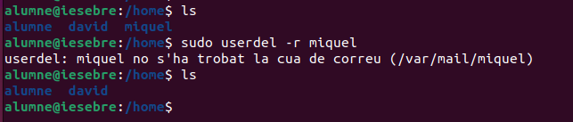
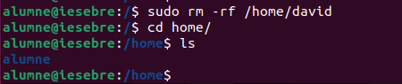
Bloquejar un usuari
Per bloquejar l'accés d'un usuari anomenat "david", utilitzem:
sudo usermod -L david
Si la segona columna conté un ! al principi (ex. david:!:$y$j9T$eqz.gXACdgxhb6wt3h370...), significa que l'usuari "david" està bloquejat.
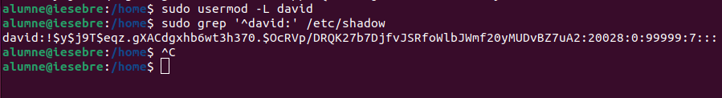
Desbloquejar un usuari
Si necessitem desbloquejar l'usuari "david", la comanda és:
sudo usermod -U david
Com es pot observar la segona columna no conté el signe d'exclamació.
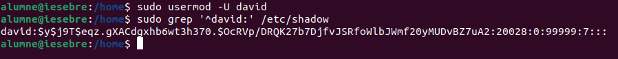
Creació d'un Usuari Sense Carpeta Personal
Quan es crea un usuari a Linux, és possible que no es generi automàticament la seva carpeta personal. Això passa si s'utilitza la comanda useradd sense opcions addicionals.
Exemple de Creació
Si es crea un usuari com "miquel" amb la comanda useradd "miquel", no es crearà la seva carpeta /home/miquel.
Per més informació, pots consultar aquest enllaç.
sudo useradd miquel
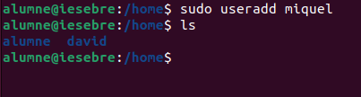
Motiu
- Sense carpeta home: La comanda
useraddno crea un directori personal per a l'usuari per defecte. Per fer-ho, s'ha d'utilitzar l'opció-m.
Creació Manual de la Carpeta Personal
Si l'usuari ja existeix i no té carpeta personal, es pot crear manualment. Després, cal canviar el propietari de la carpeta perquè sigui de l'usuari.
sudo mkdir /home/miquel
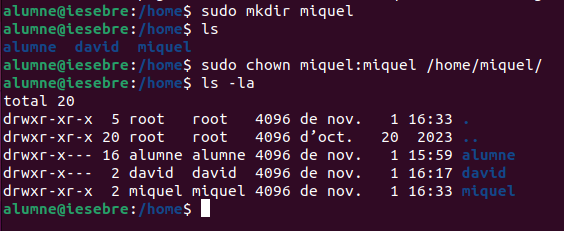
Fem que "miquel" sigui el propietari d'aquesta carpeta amb chown
sudo chown miquel:miquel miquel
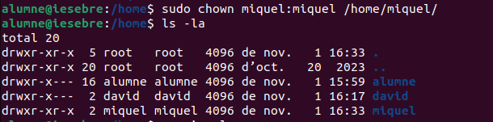
També es pot utilitzar la comanda useradd -m, que crea automàticament la carpeta /home/ per al nou usuari.
Nota: cal tenir en compte que
useradd -mno crea una contrasenya per a l'usuari; això s'ha de fer ambsudo passwd miquel.
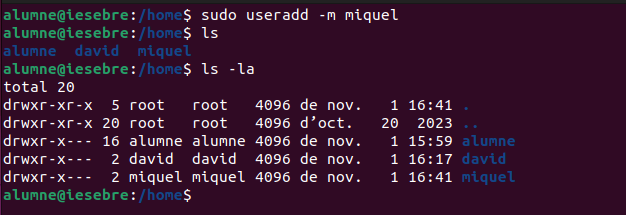
Esborrem el usuari que hem creat
Una comanda interessant és !history, que mostra totes les comandes que has executat recentment. Si vols tornar a executar una comanda de la llista, pots escriure !n, on n és el número de la comanda en la llista. Això permet executar la comanda sense haver de tornar a escriure-la.
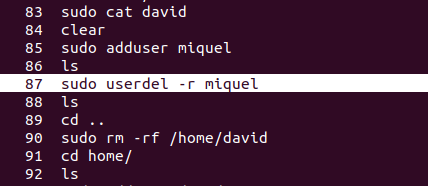
Executem la comanda.
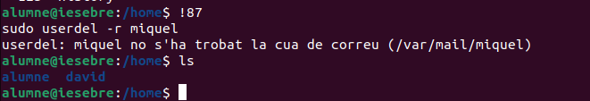
Configuració per defecte d'usuaris en Linux
Aquest document descriu els passos necessaris per configurar els paràmetres per defecte dels nous usuaris en un sistema Linux, incloent la configuració de contrasenyes i altres paràmetres generals.
Configuració del fitxer /etc/default/useradd
El fitxer /etc/default/useradd permet definir els valors per defecte per als nous usuaris, com ara la ubicació del directori home i l'intèrpret de comandes predeterminat.
sudo nano /etc/default/useradd
Passos de configuració
- Edita el fitxer
/etc/default/useradd - Modifica o afegeix les següents línies:
HOME=/home
SHELL=/bin/sh
INACTIVE=-1
EXPIRE=
SKEL=/etc/skel
CREATE_MAIL_SPOOL=yes
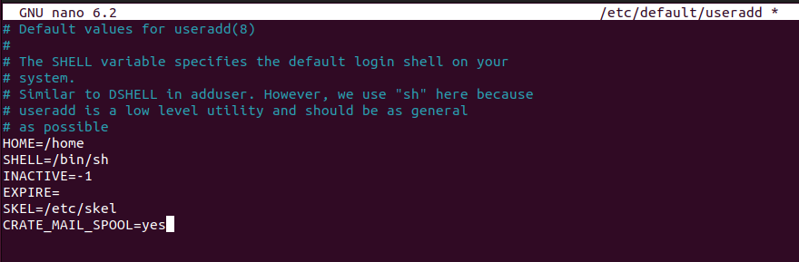
Aquestes opcions addicionals estableixen:
-
INACTIVE=-1: El compte no es desactivarà mai per manca d'activitat.
-
EXPIRE=: No hi ha data d'expiració del compte.
-
SKEL=/etc/skel: S'utilitzarà el directori /etc/skel per copiar els fitxers per defecte al directori home del nou usuari.
-
CREATE_MAIL_SPOOL=yes: Es crearà un buzó de correu per al nou usuari.
-
HOME=/home: Estableix el directori home predeterminat per als nous usuaris a /home.
-
SHELL=/bin/sh Especifica que el shell predeterminat per als nous usuaris serà /bin/sh (el shell Bourne).
- Aquesta configuració assegura que els nous usuaris tinguin el seu directori home a
/home/[nomusuari]i utilitzin/bin/shcom a shell per defecte.
Política de contrasenyes a /etc/login.defs
El fitxer /etc/login.defs defineix les polítiques de seguretat relacionades amb les contrasenyes.
Configuració de seguretat
1: Edita el fitxer /etc/login.defs
sudo nano /etc/login.defs
2: Configura els següents paràmetres:
PASS_MIN_LEN 5
PASS_MAX_DAYS 90
PASS_WARN_AGE 7
PASS_MIN_DAYS 0
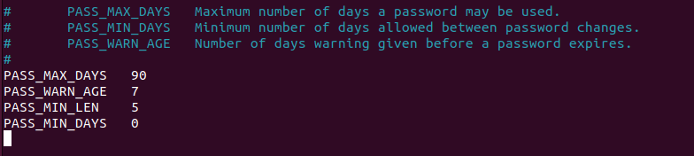
-
PASS_MIN_LEN: Longitud mínima de la contrasenya (5 caràcters) -
PASS_MAX_DAYS: Dies màxims abans que caduqui la contrasenya (90 dies) -
PASS_WARN_AGE: Dies d'avís abans de la caducitat (7 dies) -
PASS_MIN_DAYS: Mínim de dies que un usuari ha de esperar abans de poder canviar la seva contrasenya (0 dies).
Configuració del directori /etc/skel
El directori /etc/skel conté els fitxers i directoris que es copiaran automàticament al directori home dels nous usuaris.
Gestió dels fitxers per defecte
- Examina el contingut actual:
ls -la /etc/skel
- Personalitza els fitxers segons necessitis:
.bashrc.profile.bash_logout
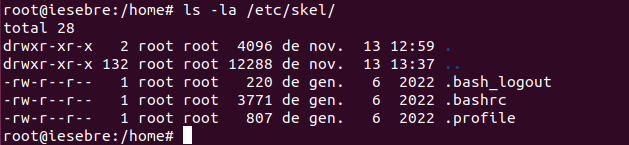
Vegem breument què fa cada un d'ells:
.bash_logout
Aquest fitxer s'executa automàticament quan l'usuari finalitza una sessió interactiva. És útil per:
-
Netejar recursos o processos temporals.
-
Mostar missatges de finalització de sessió.
-
Executar scripts de manteniment personalitzats.
Exemple de personalització del fitxer .bash_logout
Afegir una línia per netejar l'historial de comandes i mostrar un missatge d'adeu:
Comprovem el historial amb la comanda !history
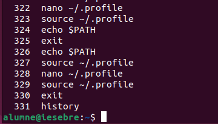
Per esborrar l'historial de comandes en tancar sessió
Afegim aquestes linies dins del axiu de .bash_logout.
sudo nano /etc/skel/.bash_logout
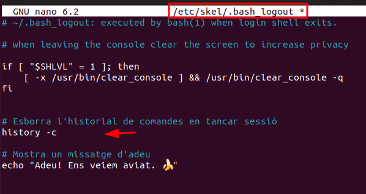
history -c
La comanda
history -cnomés esborra l'historial de la sessió actual i no afecta l'arxiu persistent (~/.bash_history).
Mostra un missatge d'adeu
echo "Adeu! Ens veiem aviat. 🍌"
Crearem un nou usuari i comprovarem l'historial d'aquest usuari.
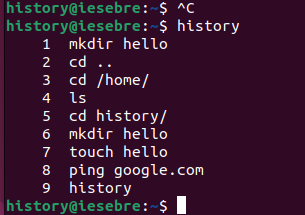
Ens desconnectarem de l'usuari "history" i observarem que ens ha dit "Adeu! Ens veiem aviat. 🍌". També s'hauria d'haver esborrat l'historial.
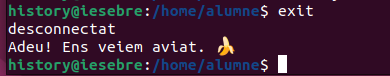
Es podria eliminar l'historial complet esborrant l'arxiu amb
rm -f ~/.bash_historyo "sobreescrivint-lo" amb> ~/.bash_history.
.bashrc:
-
Aquest és un dels fitxers de configuració més importants per a l'usuari.
-
S'executa cada vegada que l'usuari inicia una nova sessió de shell Bash.
-
Conté definicions de variables d'entorn, aliases, funcions i altres configuracions personalitzades per a l'usuari.
Podem editar-ho i afegir algun "alias" més.
sudo nano /etc/skel/.bashrc
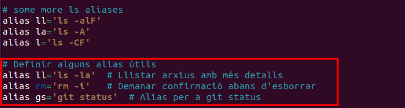
Comprovació.
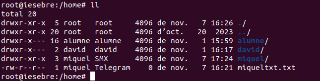
.profile
Aquest fitxer s'executa durant l'inici de sessió. És útil per configurar variables d'entorn i altres ajustaments globals per a l'usuari. Exemples d'ús inclouen:
-
Configuració de variables d'entorn, com ara
PATH. -
Personalització del prompt o altres configuracions de shell.
-
Execució d'altres fitxers de configuració, com
.bashrc, si està disponible.
Exemple de personalització del fitxer .profile
Afegir un directori personalitzat al PATH
Permet als usuaris tenir un directori dedicat als seus scripts i assegurar-se que aquests es poden executar des de qualsevol lloc sense especificar rutes completes.
if [ -d "$HOME/scripts" ]; then
PATH="$HOME/scripts:$PATH"
fi
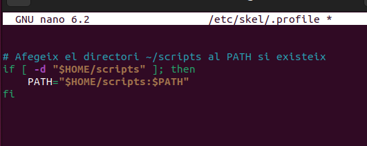
Posterior ment crearem el directori, el script i també donem permisos d'execusió.
mkdir ~/scripts
nano ~/scripts/hello.sh
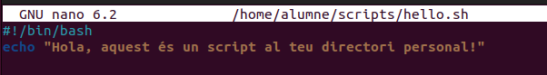
sudo chmod +x ~/scripts/hello.sh
source ~/.profile
Executem el script únicament escriu hello.sh
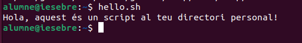
Nota
Aquesta configuració detecta automàticament si el directori scripts existeix al directori home de l'usuari.
Si el directori no existeix, la configuració no afecta el PATH, assegurant que no es generen errors.
És ideal per sistemes on els usuaris necessiten executar scripts personalitzats amb freqüència.
Consell: Qualsevol fitxer que afegeixis a
/etc/skeles copiarà automàticament al directori home dels nous usuaris.
Creació d'usuaris
Mètode amb paràmetres específics
sudo useradd Leia
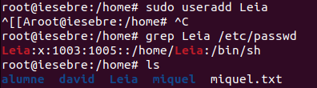
Comprovació de l'usuari
grep Leia /etc/passwd
Es pot observar que s'ha creat correctament i també se li ha creat la seva carpeta dins del /home/
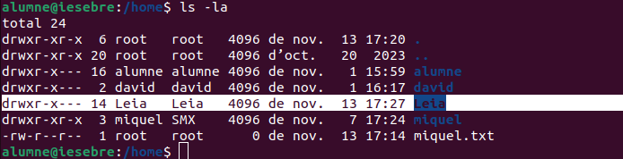
Entrem amb el usuari i comprovem.
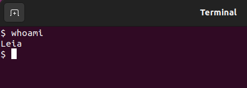
- Important: Després de crear un nou usuari, verifica sempre que pots iniciar sessió correctament abans de tancar la sessió d'administrador.
Comandes Addicionals de Gestió d'Usuaris i Grups
Assignació de Propietat i Grup d'Usuaris
En un sistema Linux, que un usuari sigui el propietari d’un fitxer és important perquè el propietari té control sobre els permisos i pot decidir qui pot llegir, escriure o executar aquest fitxer. Això és essencial per a la seguretat, ja que garanteix que només els usuaris autoritzats puguin modificar o accedir a informació sensible.
Com configurar el propietari i el grup d'un directori o fitxer
chown: Aquesta comanda permet assignar un usuari i un grup com a propietaris d'un fitxer o directori. Això és útil per establir qui té control sobre els permisos d'aquests fitxers o directoris.
Exemple:
- Crearem un fitxer de demostració i li assignarem el propietari
miqueli el grupmiquel.
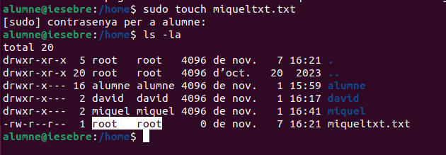
Amb la comanda següent, assignem l'usuari i el grup miquel com a propietaris del fitxer miquel:
sudo chown miquel:miquel miqueltxt.txt
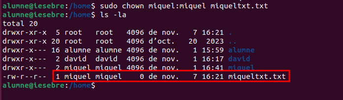
Aquest canvi assegura que l'usuari miquel pugui gestionar els permisos del fitxer.
Opció addicional: chown -R miquel:miquel miquel per canviar també els permisos de tots els subdirectoris i fitxers.
Exemple:
- Crearem una carpeta anomenada miquel i dins d'aquesta crearem diversos fitxers. Es pot observar que el propietari és root, ja que els hem creat com a usuari root. Per canviar aquests permisos, executarem la comanda següent.
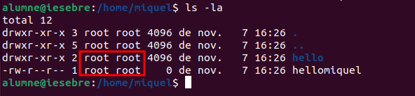
sudo chown -R miquel:miquel miquel
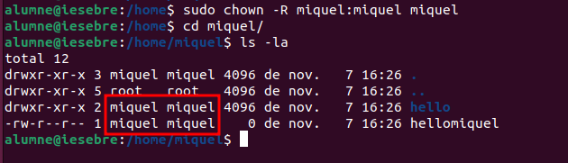
chgrp: Canvia només el grup propietari:
sudo chgrp Telegram miqueltxt.txt — canvia el grup a Telegram sense alterar el propietari miquel.
sudo chgrp telegram miqueltxt.txt
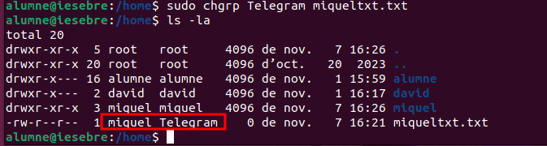
Canviar la Contrasenya d'un Usuari
passwd: Estableix o canvia la contrasenya d'un usuari.
Per exemple, passwd miquel per definir la contrasenya de miquel.
sudo passwd miquel
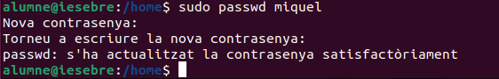
Opció addicional: passwd -e miquel per forçar que miquel canviï la seva contrasenya al següent inici de sessió.
sudo passwd -e miquel
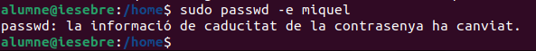
En Inciar la sessió ens demana el canvi de contrasenya.
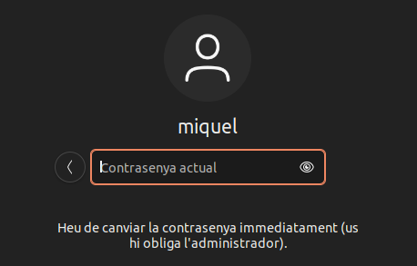
Assignar una Shell per Defecte
Què és una Shell?
En un sistema Linux, una shell és una interfície que permet als usuaris interactuar amb el sistema operatiu a través de línies de comanda. Actua com un "intèrpret" de comandes, processant i executant ordres que l'usuari escriu, com la creació de fitxers, el seu desplaçament o l'execució de programes.
Quan un usuari inicia sessió al sistema, la shell és l'entorn on treballa i des d'on pot executar les seves ordres. Les shells més comunes inclouen sh.
Diferència entre /bin/bash i /bin/sh
/bin/bash:
- Bash (Bourne Again SHell) és una shell avançada, basada en la shell oriMiquell de Unix, sh.
- Ofereix característiques addicionals com històric de comandes, completat de comandes, manipulació d'arxius millorada, entre altres.
És la shell per defecte en moltes distribucions de Linux.
/bin/sh:
- Sh (Bourne Shell) és la shell oriMiquell de Unix, més simple i amb menys funcionalitats que Bash.
- Sovint és un enllaç a una shell més lleugera com Dash en sistemes amb requisits mínims.
- S'utilitza per garantir compatibilitat bàsica amb scripts.
Exemple en /etc/passwd
david:x:1001:1001:,,,:/home/david:/bin/bash
miquel:x:1002:1002::/home/miquel:/bin/sh
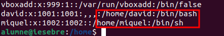
chsh -s:
Aquest comandament permet establir la shell per defecte d'un usuari. Si ets l'usuari que vols modificar, pots utilitzar-lo sense necessitat de permisos d'administrador.
chsh -s /bin/bash miquel
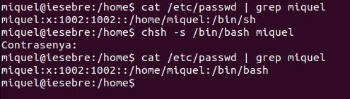
També es podria executar amb sudo chsh -s /bin/bash miquel per canviar la shell d'un altre usuari si tens permisos d'administrador.
sudo chsh -s /bin/bash miquel
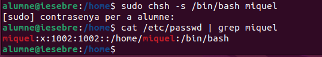
Alternativa amb permisos d'administrador:
Una alternativa per canviar la shell d'un altre usuari, com miquel o david, necessitaràs permisos d'administrador. En aquest cas, pots utilitzar el següent comandament:
sudo usermod --shell /bin/bash miquel
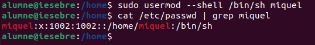
Avís sobre el canvi de shell d'un usuari
Canviar la shell d'un usuari pot tenir algunes implicacions:
-
Canvi en el comportament: El canvi a bash ofereix més funcionalitats, però si l'usuari estava acostumat a una shell més senzilla com sh, pot notar canvis en el seu comportament.
-
Compatibilitat de scripts: Alguns scripts creats per sh podrien necessitar ajustos per funcionar amb bash, tot i que bash és compatible amb sh en general.
-
Reiniciar sessió: L'usuari haurà de tancar la sessió i iniciar-la novament perquè el canvi de shell tingui efecte.
Gestió de Grups per a un Usuari
Afegir un usuari a un grup existent
gpasswd -a: Afegeix l'usuari a un grup secundari:
- Exemple:
gpasswd -a miquel Telegram— afegeixmiquelal grupTelegram.
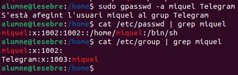
Es pot observar que el grup principal que miquel no ha canviat si no que s'ha afegit a un altre grup.
Alternativa: usermod -a -G Telegram miquel per aconseguir el mateix resultat.
Assignar Administració de Grup
gpasswd -A: Designa un usuari com a administrador del grup:
gpasswd -A miquel Telegram— designamiquelcom administradora del grupTelegram.
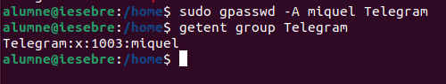
Canviar el Grup Principal d'un Usuari
usermod -g: Defineix el grup principal d'un usuari:
- Exemple:
usermod -g Asix miquel— defineixAsixcom el grup principal per amiquel.
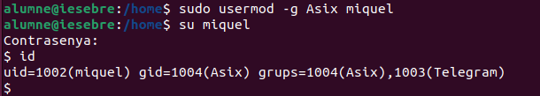
Aquesta sortida confirma que:
-
Grup primari: El grup primari de miquel és Asix (gid=1004).
-
Grups secundaris: miquel també és membre del grup Telegram (gid=1003).
Modificar el Nom d'un Grup
groupmod -n: Canvia el nom d'un grup existent:
groupmod -n SMX Telegram— canvia el nom deTelegramaSMX.
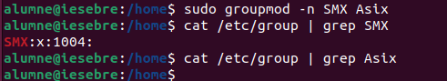
Espero que aquesta breu introducció sobre la gestió d'usuaris i grups hagi estat útil.